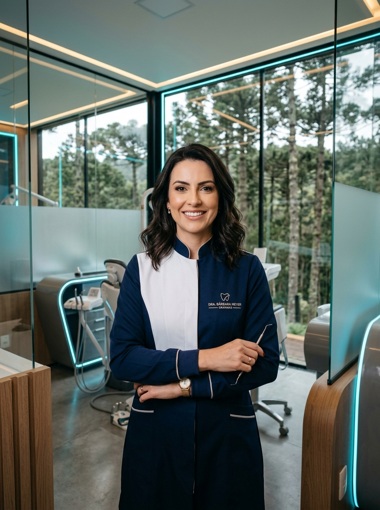
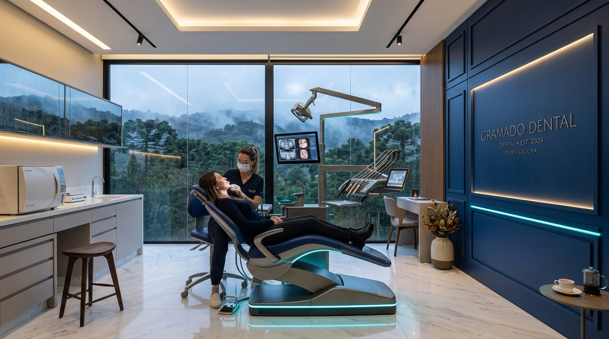

O Sorriso que Você Merece
Começa Aqui.
Tecnologia de ponta, conforto absoluto e excelência estética na Serra Gaúcha. Um ambiente acolhedor, privativo e com atenção exclusiva a cada detalhe.

+1.200 Pacientes
Sorrisos Transformados
Escaneamento 3D
Sem Moldagem Desconfortável
Atendimento Exclusivo
Privacidade & Pontualidade
Excelência Além do Convencional
Unimos tecnologia biomédica de padrão internacional à delicadeza do atendimento humanizado no coração de Gramado.
Diagnóstico Digital & Escaneamento 3D
Previsibilidade milimétrica sem as incômodas massas de moldagem. Visualize o resultado final do seu novo sorriso antes mesmo de iniciar o tratamento.
Atendimento Personalizado & Humanizado
Consultas com tempo generoso, escuta atenta e sem pressa. Um ambiente sereno e privativo para que você se sinta plenamente seguro e confortável.
Estética Dental de Alto Padrão
Lentes em porcelana pura ultrafina, alinhadores invisíveis e restaurações que mimetizam a perfeição óptica da dentição natural em harmonia com sua face.
Biossegurança & Conforto Total
Protocolos de assepsia rigorosos e técnicas anestésicas suaves e computadorizadas. Tratamentos tranquilos e focados no seu bem-estar absoluto.
Tratamentos em Destaque
Soluções completas desenhadas de forma personalizada para a sua saúde bucal, estética facial e qualidade de vida.
Alinhadores Invisíveis
Alinhamento dentário moderno, confortável e praticamente imperceptível. Livre-se dos fios metálicos e remova quando for comer ou escovar.
- Previsão digital detalhada no software 3D
- Placas transparentes sob medida
- Manutenção simplificada e consultas espaçadas
Lentes de Contato & Facetas
Lâminas ultrafinas de porcelana pura que corrigem formato, proporção, cor e pequenas imperfeições com extrema naturalidade óptica.
- Desgaste minimamente invasivo
- Resistência e estabilidade de cor superior
- Design personalizado ao formato do seu rosto
Implantes & Reabilitação Oral
Recupere a estabilidade mastigatória e a confiança de sorrir com implantes instalados com cirurgia guiada por computador sem cortes excessivos.
- Procedimento planejado em 3D
- Pós-operatório rápido e confortável
- Próteses de porcelana zircônia de última geração
Clareamento Dental a Laser
Tecnologia fotoativada combinada que remove manchas e devolve a luminosidade natural dos dentes sem agredir o esmalte nem causar sensibilidade.
- Resultados nítidos na primeira sessão
- Barreira de proteção para gengiva e esmalte
- Protocolo exclusivo consultório + kit home care
Harmonização Orofacial
Procedimentos de rejuvenescimento sutil e delicado. Toxina botulínica, ácido hialurônico e bioestimuladores aplicados para valorizar sua beleza natural.
- Preenchimento labial ultra suave
- Tratamento de sorriso gengival e bruxismo
- Produtos das marcas mundiais mais conceituadas
Prevenção & Check-up Digital
Mapeamento minucioso intraoral de cada elemento dentário. Limpeza ultrassônica delicada, profilaxia e diagnóstico precoce para preservar sua biologia.
- Câmera intraoral com zoom de alta resolução
- Jateamento com glicina ultrafina suave
- Relatório digital ilustrado entregue ao paciente
A Ciência da Harmonia Perfeita
No Consultório Dra. Bárbara Meyer, cada sorriso é planejado através de escaneamento intraoral tridimensional. Desenhamos a proporção áurea dental de acordo com a movimentação dos lábios, curva do sorriso e traços faciais.
Precisão Submilimétrica
Modelos virtuais capturados com fidelidade microscópica sem incômodos.
Visualização Prévia (Mock-up)
Você visualiza e aprova o seu novo sorriso antes de qualquer etapa definitiva.
Biomimetismo Natural
Porcelanas puras que refletem a luz natural exatamente como o esmalte dentário.
Arraste a barra para comparar o diagnóstico digital com a transformação do sorriso

Consultório Boutique em Gramado
Vista panorâmica para os pinhais da Serra Gaúcha
Dra. Bárbara Meyer
Com formação de excelência e constante atualização nas técnicas mais modernas da odontologia contemporânea, a Dra. Bárbara Meyer concebeu seu consultório em Gramado como um espaço de serenidade, precisão e acolhimento humano.
Cada paciente é atendido com horário exclusivo e sem pressa, desfrutando de uma vista revigorante para as araucárias da serra gaúcha em uma experiência que redefine a ida ao dentista com leveza e segurança.
Privacidade Absoluta
Ambiente boutique planejado para máxima discrição e comodidade.
Tecnologia Silenciosa
Equipamentos modernos que eliminam ruídos incômodos.
Café & Lounge Acolhedor
Espaço sereno com menu de cafés especiais e climatização perfeita.
Localização Privilegiada
Estacionamento privativo e acesso facilitado em Gramado.
O que Nossos Pacientes Dizem
Avaliações autênticas de quem confiou na Dra. Bárbara Meyer para cuidar da saúde e harmonia do próprio sorriso.
"O consultório é impecável e traz uma paz imensa. A vista das araucárias de Gramado enquanto a Dra. Bárbara realizava o escaneamento 3D fez eu me sentir completamente relaxada. Minhas lentes de contato ficaram perfeitas e naturais!"
"Pontualidade exemplar, zero dor e um acolhimento sem igual. O tratamento com os alinhadores invisíveis foi muito mais prático e rápido do que imaginei. A Dra. Bárbara é extremamente atenciosa e competente."
"Fiz clareamento a laser e harmonização sutil do sorriso. Ficou exatamente o que eu buscava: delicado, elegante e muito natural. O consultório é moderno, claro e super agradável. Recomendo com toda certeza!"
"Sempre tive receio de procedimentos odontológicos. A Dra. Bárbara me passou uma segurança absoluta logo no primeiro contato. A anestesia foi imperceptível e o implante ficou perfeito. Muito grato pelo carinho e precisão!"
Perguntas Frequentes
Entenda como funciona a jornada de atendimento e planejamento do seu novo sorriso no consultório em Gramado.
Pronto para Conquistar o Sorriso que Você Merece?
Agende uma avaliação exclusiva com a Dra. Bárbara Meyer em Gramado e descubra o que a odontologia moderna e humanizada pode fazer por você.
Agendar Consulta via WhatsAppAtendimento direto: +55 54 98157-3884 • Resposta ágil e personalizada
Localização Nobre
Gramado / RS — Serra Gaúcha
Fácil acesso & estacionamento privativo
Horários de Atendimento
Segunda a Sexta: 08:30 às 19:00
Sábados: Atendimento VIP com hora marcada